임상심리사-2급 (2013-08-18 기출문제)
1과목: 심리학개론
1. Maslow의 5단계 욕구 중 “금강산도 식후경”이라는 속담의 의미와 일치하는 욕구 는?
- 생리적 욕구
- 안전의 욕구
- 소속 및 애정의 욕구
- 자기실현의 욕구
(정답률: 93%)

2. 여러 상이한 연령에 속하는 사람들로부터 동시에 어떤 특성에 대한 자료를 얻고 그 결과를 연령 간 비교하여 발달적 변화과정을 추론하는 연구방법은?
- 종단적 연구방법
- 횡단적 연구방법
- 교차비교 연구방법
- 단기종단적 연구방법
(정답률: 80%)
3. 자극추구(Sensation-Seeking) 성향에 관한 설명으로 옳은 것은?
- Eysenck는 자극추구성향에 관한 척도를 제작했다.
- 자극추구 성향이 높을수록 노아에피네프린(NE)이라는 신경전달물질을 통제하는 체계에서의 흥분수준이 낮다는 주장이 있다.
- 성격특성이 일부 신체적으로 유전된다고 하는 주장을 반박하는 근거로 제시된다.
- 내향성과 외향성을 구분하는 생리적 기준으로 사용된다.
(정답률: 77%)
4. Freud가 제시한 성격의 구조가 발달하는 순서로 올바른 것은?
- 초자아 - 원초아 - 자아
- 자아 - 원초아 - 초자아
- 원초아 - 자아 - 초자아
- 자아 - 초자아 – 원초아
(정답률: 88%)
5. 단기기억의 기억용량은 일반적으로 어느 정도인가?
- 3±2개
- 5±2개
- 7±2개
- 9±2개
(정답률: 83%)
6. 다음 중 온도나 지능검사의 점수를 측정할 때 사용되는 척도는?
- 명목척도
- 서열척도
- 등간척도
- 비율척도
(정답률: 79%)
7. 다음은 무엇에 관한 설명인가?
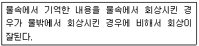
- 인출단서효과
- 맥락효과
- 기분효과
- 도식효과
(정답률: 74%)
8. Erikson의 발달단계에 대한 설명으로 틀린 것은?
- 초기경험이 성격발달에 중요하다.
- 사회성발달을 강조한다.
- 전생애를 통해 발달한다.
- 성격은 각 단계에서 경험하는 위기의 극복양상에 따라 결정된다.
(정답률: 80%)
9. 심리검사의 타당도를 측정하는 방법 중 검사의 내용이 측정하려는 속성과 일치하는 지를 논리적으로 분석·검토하여 결정하는 것은?
- 예언타당도
- 공존타당도
- 구성타당도
- 내용타당도
(정답률: 81%)
10. 강화계획 중 소거에 대한 저항이 가장 큰 것으로 알려진 것은?
- 고정간격계획
- 고정비율계획
- 변화간격계획
- 변화비율계획
(정답률: 79%)
11. 타인에 대한 호감이나 매력의 정도를 결정짓는 요인과 가장 거리가 먼 것은?
- 근접성
- 유사성
- 신체적 매력
- 행위자-관찰자 편향
(정답률: 80%)
12. 달이 구름 속을 떠다니는 것처럼 보이는 현상은?
- 깊이지각
- 형태지각
- 가현운동
- 유도운동
(정답률: 61%)
13. 성격이론가와 업적 또는 주장이 바르게 연결된 것은?
- Cattell - 체액론
- Allport - 소양인
- Erikson - 심리성적발달
- Jung – 내·외향성
(정답률: 65%)
14. 고전적 조건형성에서 연합형성의 강도에 영향을 주는 요인에 관한 설명으로 틀린것은?
- CS와 UCS의 연합 횟수가 많을수록 연합강도는 증가한다.
- UCS가 CS보다 0.5초 전에 제시될 때 연합이 가장 강하게 형성된다.
- CS가 UCS 없이 반복적으로 제시되면 조건 반응의 소거가 일어난다.
- 잘 확립된 CS는 새로운 중성적 자극을 조건형성시킬 수 있는 힘을 갖는다.
(정답률: 73%)
15. 다음 중 아동으로 하여금 매일 아침 자신의 침대를 정리하도록 하는 데 효과가 있는 것을 모두 짝지은 것은?
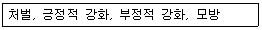
- 처 벌
- 처벌, 긍정적 강화
- 처벌, 긍정적 강화, 부정적 강화
- 처벌, 긍정적 강화, 부정적 강화, 모방
(정답률: 76%)
16. 다음 중 Rogers의 “자기” 개념의 설명으로 틀린 것은?
- 사람의 세상에 대한 지각에 영향을 준다.
- 상징화되지 못한 감정들로 구성되어 있다.
- 자기에는 지각된 자기 외에 되고 싶어 하는 자기도 포함된다.
- 지각된 경험에 의해 형성된다.
(정답률: 80%)
17. 관찰법에 관한 설명으로 틀린 것은?
- 관찰법은 실험법과 같이 독립변인을 인위적으로 조작할 수 없으므로 관찰변인을 체계적으로 측정하지 않는다.
- 관찰법에는 직접 집단에 참여해서 그 집단구성원과 같이 생활하면서 관찰하는 참여관찰도 있다.
- 관찰법은 임신 중 영양부족이 IQ에 미치는 영향과 같이 실험 상황을 윤리적으로 통제할 수 없을 때 사용한다.
- 관찰법에서는 관찰자의 편견이나 희망이 반영되어 관찰자 편향(Observer)이 일어날 수 있다.
(정답률: 70%)
18. 다음 중 모집단의 범위와 변산도를 가장 잘 설명하는 통계방법은?
- 평균편차
- 범 위
- 표준편차
- 상관계수
(정답률: 76%)
19. 어떤 연구에서 종속변인에 나타난 변화가 독립변인의 영향 때문이라고 추론할 수 있는 정도를 의미하는 것은?
- 내적 신뢰도
- 외적 신뢰도
- 내적 타당도
- 외적 타당도
(정답률: 72%)
20. 혼자 있을 때 보다 옆에 누가 있을 때 과제의 수행이 더 우수한 것을 일컫는 현상은?
- 몰개성화
- 군중 행동
- 사회적 촉진
- 동조 행동
(정답률: 89%)
2과목: 이상심리학
21. 의존성 성격장애의 진단기준에 해당하지 않는 것은?
- 자신이 사회적으로 무능하고 열등하다고 생각한다.
- 자신의 일을 혼자서 시작하거나 수행하기가 어렵다.
- 타인의 보살핌과 지지를 얻기 위해 무슨 행동이든 한다.
- 타인의 충고와 보장이 없이는 일상적인 일도 결정을 내리지 못한다.
(정답률: 69%)
22. 불안장애나 우울증과 같이 정서적인 가변성이나 과민성과 관련이 깊은 Eysenck의 성격차원은?
- 외-내향성(E)
- 신경증적 경향성(N)
- 정신병적 경향성(P)
- 허위성(L)
(정답률: 77%)
23. 정신분석학적 관점에서 볼 때 해리성 장애 환자들에게서 가장 흔히 나타나는 방어기제는?
- 억 압
- 반동형성
- 전 치
- 주지화
(정답률: 85%)
24. 성정체감 장애에 관한 설명으로 틀린 것은?
- 1차 및 2차 성징을 제거하려는 성전환수술에 집착한다.
- 반대 성을 가진 사람으로 행동하고 인정되기를 바란다.
- 자신의 생물학적 성에 대해 지속적으로 불쾌감을 느낀다.
- 반대 성의 옷을 입는 경우가 많아 흔히 복장도착적 물품음란증으로 중복 진단된다.
(정답률: 78%)
25. Abramson 등의 '우울증의 귀인이론(Attributional Theory of Depression)'에 관한 설명으로 틀린 것은?
- 우울증에 취약한 사람은 실패경험에 대해 내부적, 안정적, 전반적 귀인을 하는 경향이 있다.
- 실패경험에 대한 내부적 귀인은 자존감을 손상시킨다.
- 실패경험에 대한 안정적 귀인은 우울의 만성화에 기여한다.
- 실패경험에 대한 특수적 귀인은 우울의 일반화를 조장한다.
(정답률: 82%)
26. 다음은 주요 우울삽화의 진단기준이며 ( )는 가장 핵심적 증상이다. ( )안에 알맞은 것은?
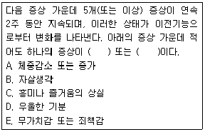
- A, B
- B, C
- C, D
- D, E
(정답률: 76%)
27. 섭식장애에서 부적절한 보상행동에 포함되는 것은?
- 폭식
- 과식
- 과도한 금식
- 하제 사용
(정답률: 78%)
28. Jellinek은 알코올 의존이 단계적으로 발전하는 장애라고 주장하면서 4단계의 발전 과정을 제시하였다. 다음 중 4단계의 발전과정을 바르게 나열한 것은?
- 전알코올 증상단계 - 전조단계 - 중독단계 - 만성단계
- 전조단계 - 결정적 단계 - 남용단계 - 중독단계
- 전알코올 증상단계 - 전조단계 - 결정적 단계 - 만성단계
- 전조단계 - 유도단계 - 중독단계 – 만성단계
(정답률: 54%)
29. 정신분열병의 원인에 관한 설명으로 옳은 것은?
- 사회원인 가설 : 정신분열병 환자는 발병 후 도시에서 빈민거주지역으로 이동한다는 가설
- 도파민(Dopamine) 가설 : 정신분열병의 발병이 도파민이라는 신경전도체의 과다활동에 의해 유발된다는 이론
- 사회선택이론 : 정신분열병이 냉정하고 지배적이며 갈등을 심어주는 어머니에 의해 유발된다는 이론
- 스트레스-소인가설 : 정신분열병이 뇌의 특정 영역의 구조적 손상에 의해 유발된다는 이론
(정답률: 78%)
30. 치매의 진단에 필요한 증상과 가장 거리가 먼 것은?
- 기억장해
- 함구증
- 실어증
- 실행증
(정답률: 71%)
31. 다음 중 기질성 정신장애에 해당되지 않는 것은?
- 섬 망
- 치 매
- 기억장애
- 주요우울장애
(정답률: 63%)
32. 사람이 스트레스 장면에 처하게 되면 일차적으로 불안해지고 그 장면을 통제할 수 없게 되면 우울해진다고 할 때 이를 설명하는 모델은?
- 학습된 무기력감 모델
- 강화감소 모델
- 인지 모델
- 정신분석 모델
(정답률: 73%)
33. Clark의 인지이론에 따르면, 공황발작을 초래하는 핵심적 요인은?
- 신체 건강에 대한 걱정과 염려
- 만성 질병에 대한 잘못된 귀인
- 억압된 분노표출에 대한 두려움
- 신체 감각에 대한 파국적 오해석
(정답률: 78%)
34. 병적 도박은 DSM-Ⅳ의 어느 진단 범주에 속하는가?
- 성격장애
- 불안장애
- 충동조절장애
- 적응장애
(정답률: 84%)
35. 다음 중 불안장애에 해당되는 것을 모두 짝지은 것은?
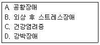
- B, C
- A, C, D
- A, B, D
- A, B, C, D
(정답률: 54%)
36. 다음에서 정신지체의 진단기준 및 임상적 특징이 옳은 것은?
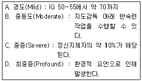
- A, B
- A, D
- B, C
- C, D
(정답률: 73%)
37. 인지이론에 따르면 범불안장애 환자는 불확실성에 대한 인내력이 부족하여 “만일…하면 어떡하지?”라는 내면적 질문을 계속하여 던지는 경향이 있다. 특히 이러한 질문과 대답을 반복하는 연쇄적인 사고과정 속에서 점점 더 부정적이고 끝장난다는 식의 결과를 예상하게 되는데 이와 같은 특징을 무엇이라고 하는가?
- 주지화(intellectualization)
- 파국화(catastrophizing)
- 침투적 사고(intrusive thoughts)
- 노출(exposure)
(정답률: 81%)
38. 아동청소년기에 진단되는 사회공포증에 관한 설명으로 틀린 것은?
- 10세 이전에 주로 발생한다.
- 자기집중화와 자기비판적 사고와 연관된다.
- 사회적 상황에 노출되면 급성 불안발작이 나타난다.
- 생리적 신체반응을 남들이 알아차릴 것이라고 여긴다.
(정답률: 64%)
39. 순환성 장애의 경과 중에 주요 우울증 삽화가 추가적으로 발생한 경우, 순환성 장애의 진단과 함께 추가로 내려야 할 진단명은?
- 기분부전장애
- 주요 우울장애
- 양극성장애 Ⅰ형
- 양극성장애 Ⅱ형
(정답률: 54%)
40. 다음 약물 중 아편류에 해당하지 않는 약물은?
- 모르핀
- 헤로인
- 메사돈
- 엑스터시
(정답률: 53%)
3과목: 심리검사
41. Rosenzweig의 그림좌절검사(Picture Frustration Test)에서는 표출되는 공격성의 세 방향을 구분하고 있다. 세 방향에 속하지 않는 것은?
- 투사지향형
- 내부지향형
- 외부지향형
- 회피지향형
(정답률: 68%)
42. 발달검사를 사용할 때 고려해야 할 사항이 아닌 것은?
- 다중기법적 접근을 취해야 한다.
- 경험적으로 타당한 측정도구를 사용해야 한다.
- 규준에 의한 발달적 비교가 가능해야 한다.
- 기능적 분석이 가장 유용하다.
(정답률: 58%)
43. 신경심리검사의 목적에 관한 설명으로 틀린 것은? 라
- 기질적, 기능적 장애의 감별진단에 유용하다.
- 재활과 치료평가 및 연구에 유용하다.
- CT나 MRI와 같은 뇌영상기법에서 이상소견이 나타나지 않을 때 유용할 수 있다.
- 기능적 장애의 원인을 판단하는 데 도움이 된다.
(정답률: 61%)
44. MMPI 상승척도쌍에 관한 해석으로 틀린 것은?
- 1-3 : 우울감이 동반되는 신체적 증상을 나타낸다.
- 4-6 : 만성적인 적대감과 분노감이 있으며, 이로 인해 친밀한 관계를 형성하기 어렵다.
- 6-8 : 사고장애와 현실판단력 장애 등 정신병적 상태를 나타낸다.
- 7-0 : 불안과 긴장 수준이 높고, 이로 인해 사회적 상황을 회피하는 경향을 나타낼 수 있다.
(정답률: 56%)
45. 신뢰도의 추정방법으로 반분신뢰도를 사용할 때의 장점으로 옳은 것은?
- 검사의 문항수가 적어도 된다.
- 반분된 검사가 동형일 필요가 없다.
- 속도검사의 신뢰도를 추정하는 데 적합하다.
- 기억과 연습의 효과를 통제할 수 있다.
(정답률: 40%)
46. 다음 중 뇌손상으로 인해 기능이 떨어진 환자를 평가하고자 할 때 흔히 부딪힐 수 있는 환자의 문제와 가장 거리가 먼 것은?
- 시력장애
- 주의력 저하
- 동기저하
- 피 로
(정답률: 73%)
47. 다음에 제시된 검사제작 과정을 순서대로 나열한 것은?
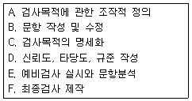
- A → C → B → E → F → D
- A → C → E → B → D → F
- C → A → B → E → F → D
- C → A → B → F → D → E
(정답률: 40%)
48. 다음 중 MMPI의 9번 척도 상승과 관련된 해석으로 가능성이 가장 높은 것은?
- 과잉활동
- 사고의 혼란
- 정서적 침체
- 신체증상
(정답률: 68%)
49. 웩슬러 지능검사에서 병전지능 추정을 위해 흔히 사용되는 소검사가 아닌 것은?
- 기본지식
- 빠진 곳 찾기
- 어휘
- 토막짜기
(정답률: 56%)
50. Jung의 심리학적 유형에 기초하여 개발된 검사는?
- TAT
- MMPI
- MBTI
- BDI
(정답률: 71%)
51. 다음 중 검사 윤리에 관한 설명으로 틀린 것은?
- 제대로 자격을 갖춘 검사자만이 검사를 사용해야 한다.
- 일정한 자격을 갖춘 사람만이 심리검사를 구매할 수 있다.
- 쉽게 이해할 수 있고 검사 목적에 맞는 용어로 검사 결과를 제시하는 것이 좋다.
- 검사 결과는 어떠한 경우라도 사생활보장과 비밀유지를 위해 수검자 본인에게만 전달되어야 한다.
(정답률: 75%)
52. MMPI의 실시방법에 관한 설명으로 틀린 것은?
- 검사를 실시하는 방의 분위기는 조용하고 안정되어 있어야 한다.
- 피검자들이 피로해 있지 않고 권태를 느끼지 않는 시간을 택하는 것이 좋다.
- 피검자의 독해력 여부를 확인하는 일이 중요하다.
- 피검자가 환자이고 개인적으로 실시할 경우에는 검사자와 피검사간에는 친화력이 중요치 않다.
(정답률: 80%)
53. 다음 중 뇌손상 환자의 병전지능 수준을 추정하기 위한 자료와 가장 거리가 먼 것은?
- 교육수준, 연령, 성별과 같은 인구학적 자료
- 웩슬러 지능검사에서 상황적 요인에 의해 잘 변화하지 않는 소검사 점수
- 이전의 암기력 수준, 혹은 웩슬러 지능검사에서 기억능력을 평가하는 소검사 점수
- 이전의 직업기능 수준 및 학업 성취도
(정답률: 58%)
54. 다음 중 MMPI에 관한 설명으로 틀린 것은?
- 제1차 세계대전 중 많은 사람들을 선별하는 과정에서 필요성이 대두되어 제작되었다.
- 성격검사의 유형 중 객관식 성격검사에 해당하는 대표적 검사이다.
- 어느 한 문항이 특정 속성을 측정한다고 생각되면 특정 척도에 포함시키는 논리적, 이 성적 방법에 따라 제작되었다.
- MMPI검사의 일차적인 목표는 정신과적 진단분류를 위한 측정이며, 일반적 성격특성에 관한 유추도 어느 정도 가능하다.
(정답률: 56%)
55. 두정엽의 병변과 가장 관련이 있는 장애는? 가
- 구성장애
- 감각양식의 장애
- 운동기술의 장애
- 고차적인 인지적 추론의 장애
(정답률: 63%)
56. 다음은 Thurstone이 제안한 지능에 관한 다요인 중 어느 요인은 지칭하는 예인가?
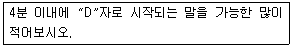
- 언어요인
- 단어 유창성 요인
- 공간요인
- 기억요인
(정답률: 65%)
57. 다음의 질문들은 정신상태검사에서 공통적으로 무엇을 확인하기 위한 질문들인가?
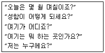
- 지남력(Orientation)
- 주의(Attention)
- 통찰(Insight)
- 신뢰도(Reliability)
(정답률: 75%)
58. 다음 중 성격평가질문지(PAI)의 특징과 가장 거리가 먼 것은?
- 현대의 문항반응이론에 근거해서 제작되었다.
- 각 척도는 고유문항으로 구성되어 있고 문항의 중복이 없다.
- 정상인 보다는 정신 병리적 특징을 가진 사람들에게 더 유용하다.
- 각 척도는 3~4개의 하위척도로 구분되어 있어서 장애의 상대적 속성을 평가할 수 있다.
(정답률: 53%)
59. 다음 중 나머지 세 사람들과 공통점이 적은 지능이론을 주장한 사람은?
- Gardner
- Guilford
- Spearman
- Thurstone
(정답률: 50%)
60. ADHD(주의력결핍과잉행동장애)에서 나타날 수 있는 보편적인 지능검사 소검사들의 특징은?
- 산수, 숫자외우기 문제 점수의 저하
- 토막짜기, 어휘 문제 점수의 상승
- 언어성 IQ가 동작성 IQ보다 상승
- 차례맞추기, 이해문제 점수의 상승
(정답률: 77%)
4과목: 임상심리학
61. 다음 중 행동적 평가 요소에 관한 설명으로 옳은 것은?
- 목 적 : 병인론적 요인을 확인하기 위해 강조된다.
- 과거력의 역할 : 현재 상태가 과거의 산물이라 생각하기 때문에 중시된다.
- 행동의 역할 : 특정한 상황에서 사람의 행동목록의 표본으로 중시된다.
- 도구의 구성 : 상황적 특성보다는 초맥락적 일관성을 강조한다.
(정답률: 60%)
62. 다음에 해당하는 강화계획으로 옳은 것은?
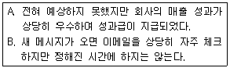
- A : 고정비율, B : 고정간격
- A : 고정간격, B : 변동비율
- A : 고정비율, B : 변동간격
- A : 변동비율, B : 고정비율
(정답률: 50%)
63. 다음 중 고전적 조건형성의 원리를 응용한 치료기법은?
- 혐오치료
- 토큰 경제
- 타임 아웃(Time-Out) 기법
- 부적 강화
(정답률: 62%)
64. 심리치료 과정에서 저항이 일어나는 일반적인 이유와 가장 거리가 먼 것은?
- 환자가 변화를 원할지라도 환자의 삶에 중요한 영향을 미치는 타인들이 현 상태를 유지하도록 방해할 수 있기 때문이다.
- 부적응적 행동을 유지함으로써 얻는 이차적 이득을 환자가 포기하기 어렵기 때문이다.
- 익숙한 행동을 변화시키려는 시도가 환자에게 위협을 주기 때문이다.
- 치료자가 가진 가치나 태도가 환자에게 위협적이기 때문이다.
(정답률: 68%)
65. 다음과 같은 자문의 유형은? 다
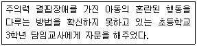
- 내담자 중심 사례 자문
- 프로그램 중심 행정 자문
- 피자문자 중심 사례 자문
- 자문자 중심 행정 자문
(정답률: 57%)
66. 최초로 임상심리학이라는 용어를 사용하였고, 또 최초로 심리진료소를 개설한 학자는?
- W. Wundt
- L. Witmer
- S. Freud
- C. Rogers
(정답률: 70%)
67. 자기보고형 성격검사를 실시한 결과 의도적 왜곡 가능성이 높아 결과 해석에 어려움이 있다. 다음 중 이러한 의도적 왜곡을 최소화 할 수 있는 검사는?
- 지능검사
- 신경심리검사
- MBTI
- 로샤검사
(정답률: 66%)
68. Rogers가 제안한 내담자의 긍정적 변화를 촉진시키기 위한 치료자의 3가지 조건에 해당하지 않는 것은?
- 무조건적 존중
- 정확한 공감
- 창의성
- 솔직성
(정답률: 71%)
69. 다음 중 효과적인 경청과 가장 거리가 먼 것은?
- 내담자가 심각한 듯 얘기를 하지만, 면접자가 보기에는 그렇게 보이지 않을 때에는 중단시킨다.
- 면접자는 반응을 보이기 앞서서, 내담자가 스스로 말할 시간을 충분히 주려고 한다.
- 면접자는 내담자에게 주의를 많이 기울인다.
- 내담자가 문제점을 피력할 때 가로막지 않고, 문제점에 관한 논쟁을 피하지 않는다.
(정답률: 70%)
70. 심리검사를 실시하거나 면접을 시행하는 동안 임상심리학자가 취해야 할 태도로 적합한 것은?
- 행동관찰에서는 다른 사람 또는 다른 장면에서는 관찰할 수 없는 비일상적인 행동이나 그 환자만의 특징적인 행동을 주로 기술한다.
- 관찰된 행동을 기술할 때에는 구체적인 행동을 기술하기 보다 불안하다거나 우울하다와 같은 일반적 용어를 사용하는 것이 좋다.
- 정상적인 적응을 하고 있는 사람들이 흔히 보이는 일반적인 행동까지 평가보고서에 포함시키는 것이 좋다.
- 평가보고서에는 주로 환자의 특징적인 행동과 심리검사 결과만 보고하며, 외모나 면접자에 대한 태도, 의사소통방식, 사고, 감정 및 과제에 대한 반응은 보고할 필요가 없다.
(정답률: 58%)
71. 다음 중 유관학습의 가장 적합한 예는?
- 욕설을 하지 않게 하기 위해 욕을 할 때마다 화장실 청소하기
- 손톱 물어뜯기를 금지하기 위해 손톱에 고무덮개 씌우기
- 충격적 스트레스사건이 떠오를 때 '그만!'이라는 구호 외치기
- 뱀에 대한 공포가 있는 사람에게 뱀을 만지는 사람의 영상 보여주기
(정답률: 63%)
72. 임상심리학 자문의 순서로 옳은 것은?
- 평가 → 중재 → 질문의 이해 → 추적조사 → 종결
- 질문의 이해 → 평가 → 중재 → 종결 → 추적조사
- 중재 → 질문의 이해 → 추적조사 → 종결 → 평가
- 추적조사 → 중재 → 평가 → 종결 → 질문의 이해
(정답률: 63%)
73. 지역사회 심리학에서 지향하는 바가 아닌 것은?
- 자원 봉사자 등 비전문 인력의 활용
- 정신 장애의 예방
- 정신 장애인의 사회 복귀
- 정신과 병동 등 입원 시설의 확장
(정답률: 67%)
74. 다음에 시행된 심리치료는 어떤 이론적 유형에 기초한 것인가?
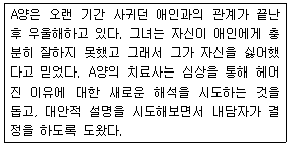
- 인본주의
- 게슈탈트
- 정신분석
- 인지행동
(정답률: 45%)
75. 체중조절을 위하여 식이요법을 시행하는 사람이 매일 식사의 시간, 종류, 양과 운동량을 구체적으로 기록하고 있다면 이는 어떤 행동관찰의 방법인가?
- 자기-감찰(Self-Monitoring)
- 통계적인 평가
- 참여 관찰(Participant Observation)
- 비참여 관찰(Non-Participant Observation)
(정답률: 73%)
76. 임상심리학자의 새로운 전문영역 중에서 비만, 스트레스 관리 등과 가장 밀접히 관련되는 것은?
- 신경심리학
- 건강심리학
- 법정심리학
- 아동임상심리학
(정답률: 72%)
77. 다음 중 대뇌피질 각 영역의 기능에 관한 설명으로 옳은 것은?
- 측두엽 : 망막에서 들어오는 시각정보를 받아 분석하며 이 영역이 손상되면 안구가 정상적인 기능을 하더라도 시력을 상실하게 된다.
- 후두엽 : 언어를 인식하는 데 중추적인 역할을 하며 정서적 경험이나 기억에 중요한 역할을 담당한다.
- 전두엽 : 현재의 상황을 판단하고 상황에 적절하게 행동을 계획하고 부적절한 행동을 억제하는 등 전반적으로 행동을 관리하는 역할을 한다.
- 두정엽 : 대뇌피질의 다른 영역으로부터 모든 감각과 운동에 관한 정보를 다 받으며 이러한 정보들을 종합한다.
(정답률: 69%)
78. 건강심리학에서의 개입방법에 관한 설명으로 틀린 것은?
- 조작적 조건형성에 의하면 통증은 정적 강화 때문에 지속된다.
- 인지행동치료는 만성 통증에 대한 신념과 기대를 변화시키고자 한다.
- 바이오피드백 기법은 다른 개입 방안을 배제하고 단독으로 시행될 때 효과가 우수한 편이다.
- 역조건 형성에 의한 체계적 둔감법은 고전적 조건형성에 기초한다.
(정답률: 62%)
79. 다음 중 심리치료기법에 관한 설명으로 틀린 것은?
- 소망 및 방어 해석 : 내담자에게 반복되어 나타나는 소망과 방어의 내용을 현재 행동과 과거 행동에 비추어 현실적으로 검증할 수 있도록 한다.
- 재진술 : 비지시적 상담에서 내담자가 이야기한 내용의 의미를 요약하고 더 분명하게 해주는 상담기법이다.
- 역할놀이 : 내담자에게 문제행동과 관련되는 장면에서 어떤 일이 일어나는지 알도록 하기 위하여 상담자와 내담자가 입장을 바꾸어 행동을 시도해 본다.
- 체계적 둔감법 : 내담자가 특정 장면에 공포를 느낄 때 이완훈련을 도입하여 낮은 단계의 불안유발 장면에서부터 점차 높은 단계의 불안 유발하는 장면에 이르기까지 불안감소를 유도하는 방법이다.
(정답률: 46%)
80. 비밀보장에 관한 설명으로 틀린 것은?
- 업무를 수행하는 과정에서 개인으로부터 얻은 정보에 대한 비밀보장을 중요시해야 한다.
- 내담자 자신이나 타인에게 명백한 위험을 초래하게 되는 경우에도 비밀보장은 준수되어야 한다.
- 적절한 시기에 내담자들에게 비밀보장의 법적인 한계에 대하여 알려주어야 한다.
- 전문적인 관계에서 얻은 정보나 평가자료는 전문적인 목적을 위해서만 토론되어야 한다.
(정답률: 72%)
5과목: 심리상담
81. 인간중심적 상담이론에서 공감적 이해란?
- 전제나 조건 없이 내담자를 한 인간으로서 존중함
- 내담자와의 관계에서 상담자가 경험하고 느낀 바를 진솔하게 내담자에게 표현함
- 내담자가 몰랐던 무의식적 내용을 지적하고 해석해줌
- 내담자의 감정과 경험을 그 입장에서 민감하고 정확하게 이해하고 전함
(정답률: 56%)
82. 가치중심적 진로상담 모델의 주장으로 옳은 것은?
- 진로결정과정에서 흥미는 가치만큼 중요한 영향을 미친다고 본다.
- 가치는 후천적 경험보다는 선천적 요인에 의해 형성된다.
- 개인은 여러 가치에 대해 우선권을 부여하고 있어 가치갈등을 겪는다.
- 개인은 가치를 충족시키는 역할수행 차원에서 진로를 고려한다.
(정답률: 50%)
83. 다음 중 단기상담에 적합한 내담자의 특성은?
- 반사회적 성격장애가 있다.
- 정상발달 중이며 발달과정상의 문제가 주증상이다.
- 지지적인 대화상대자가 전혀 없다.
- 만성적이고 복합적인 문제가 있다.
(정답률: 60%)
84. 우울한 사람들이 보이는 체계적인 사고의 오류 중 결론을 지지하는 증거가 없거나 증거가 결론과 배치되는데도 불구하고 어떤 결론을 이끌어 내는 과정을 의미하는 인지적 오류는?
- 임의적 추론(Arbitrary Inference)
- 과일반화(Overgeneralization)
- 개인화(Personalization)
- 선택적 추상화(Selective Abstraction)
(정답률: 71%)
85. 다음 중 특성-요인 상담에 관한 설명으로 틀린 것은?
- 상담자 중심의 상담방법이다.
- 사례연구를 상담의 중요한 자료로 삼는다.
- 문제의 객관적 이해보다는 내담자에 대한 정서적 이해에 중점을 둔다.
- 내담자에게 정보를 제공하고 학습기술과 사회적 적응기술을 알려 주는 것을 중요시 한다.
(정답률: 44%)
86. 게슈탈트 심리치료에서 알아차림-접촉주기 단계의 진행순서로 옳은 것은?
- 배경 → 알아차림 → 감각 → 에너지 동원 → 행동 → 접촉 → 배경
- 배경 → 에너지 동원 → 감각 → 알아차림 → 접촉 → 행동 → 배경
- 배경 → 감각 → 알아차림 → 에너지 동원 → 행동 → 접촉 → 배경
- 배경 → 감각 → 알아차림 → 행동 → 에너지 동원 → 접촉 → 배경
(정답률: 55%)
87. 해결 중심적 가족상담에 관한 설명으로 틀린 것은?
- 병리적인 것보다 건강한 것에 초점을 둔다.
- 문제원인을 이해하는 데 초점을 둔다.
- 과거보다는 미래와 현재에 초점을 둔다.
- 내담자의 강점, 자원, 건강한 특성을 치료에서 활용한다.
(정답률: 56%)
88. 상담 초기단계에서 내담자를 평가할 때 고려해야 할 사항을 모두 짝지은 것은?
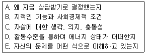
- A, B, E
- B, C, D
- A, B, C, E
- A, C, D, E
(정답률: 45%)
89. 부모들은 자식을 양육할 때 처벌을 사용하기도 한다. 다음 중 처벌을 사용할 때 중요하게 고려해야 할 사항이 아닌 것은?
- 강 도
- 융통성
- 일관성
- 즉시성
(정답률: 68%)
90. 지금과 여기, 현재의 체험을 중시하는 치료이론이 아닌 것은?
- 인간중심적 치료
- 게슈탈트 치료
- 정신분석
- 실존치료
(정답률: 57%)
91. 다음 중 약물중독의 단계로 옳은 것은?
- 실험적 사용단계 → 사회적 사용단계 → 의존단계 → 남용단계
- 실험적 사용단계 → 사회적 사용단계 → 남용단계 → 의존단계
- 사회적 사용단계 → 실험적 사용단계 → 남용단계 → 의존단계
- 사회적 사용단계 → 실험적 사용단계 → 의존단계 → 남용단계
(정답률: 56%)
92. 정신분석 상담에서 전이분석이 중요한 이유로 가장 적합한 것은?
- 내담자에 대한 상담자의 감정이 나온다.
- 상담자의 감정을 드러내지 않게 해준다.
- 무의식 내용을 알 수 있는 최선의 길이다.
- 내담자에게 현재 관계에 대한 과거의 영향을 깨닫게 해준다.
(정답률: 67%)
93. 집단상담의 필수요소로 상대방의 행동이 나에게 어떤 반응을 일으키는가에 대하여 상대방에게 직접 이야기 해주는 것을 무엇이라 하는가?
- 자기투입과 참여
- 새로운 행동의 실험
- 피드백 주고받기
- 행동의 모범을 보이기
(정답률: 73%)
94. Weiner의 비행분류에 관한 설명으로 틀린 것은?
- 비행자의 심리적인 특징에 따라서 사회적 비행과 심리적 비행을 구분한다.
- 심리적 비행에는 성격적 비행, 신경증적 비행, 정신병적(기질적) 비행이 속한다.
- 신경증적 비행은 행위자가 타인의 주목을 끌 수 있는 방식으로 비행을 저지르는 경우가 많다.
- 소속된 비행하위집단 내에서 통용되는 삶의 방식들은 자존감과 소속감을 가져다주므로 장기적으로 적응적이라고 할 수 있다.
(정답률: 66%)
95. 다음 중 진로지도/상담의 일반적인 목표로 보기 어려운 것은?
- 내담자 자신에 관한 보다 정확한 이해를 높인다.
- 합리적인 의사결정능력을 높인다.
- 일과 직업에 대한 올바른 가치관을 형성하는 데 도움을 준다.
- 이미 선택한 진로에 대해 후회하지 않도록 유도한다.
(정답률: 74%)
96. 가족상담 기법 중 가족들이 어떤 특정한 사건을 언어로 표현하는 대신에 공간적 배열과 신체적 표현으로 묘사하는 기법은?
- 재구조화
- 순환질문
- 탈삼각화
- 가족조각
(정답률: 65%)
97. 상담에서 나타날 수 있는 윤리적 갈등의 해결단계를 바르게 나열한 것은?
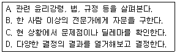
- A → C → B → D
- B → C → A → D
- C → A → B → D
- C → A → D → B
(정답률: 57%)
98. Yalom이 제시한 상호역동적인 치료집단을 위해 적절한 구성원 수는?
- 4~5명
- 7~8명
- 10~11명
- 12~13명
(정답률: 69%)
99. 성피해자에 대한 상담의 초기 단계에서 상담자가 유의해야 할 사항으로 옳은 것은?
- 피해자가 첫면접에서 성피해 사실을 부인하는 경우, 솔직한 개방을 하도록 지속적으로 유도한다.
- 가능하면 초기에 피해자의 가족상황과 성폭력 피해의 합병증 등에 관한 상세한 정보를 얻는다.
- 성피해로 인한 내담자의 심리적 외상을 신속하게 탐색하고 치유할 수 있도록 적극적으로 개입한다.
- 피해상황에 대한 상세한 정보 수집이 중요하므로 내담자가 불편감을 표현하더라도 상담자가 주도적으로 면접을 진행한다.
(정답률: 59%)
100. 알코올중독자 상담에 관한 설명으로 틀린 것은?
- 가족을 포함하여 타인의 방해를 받지 않기 위하여 비밀리에 상담한다.
- 치료 초기 단계에서 술과 관련된 치료적 계약을 분명히 한다.
- 문제 행동에 대한 행동치료를 병행할 수 있다.
- 치료후기에는 재발가능성을 언급한다.
(정답률: 77%)